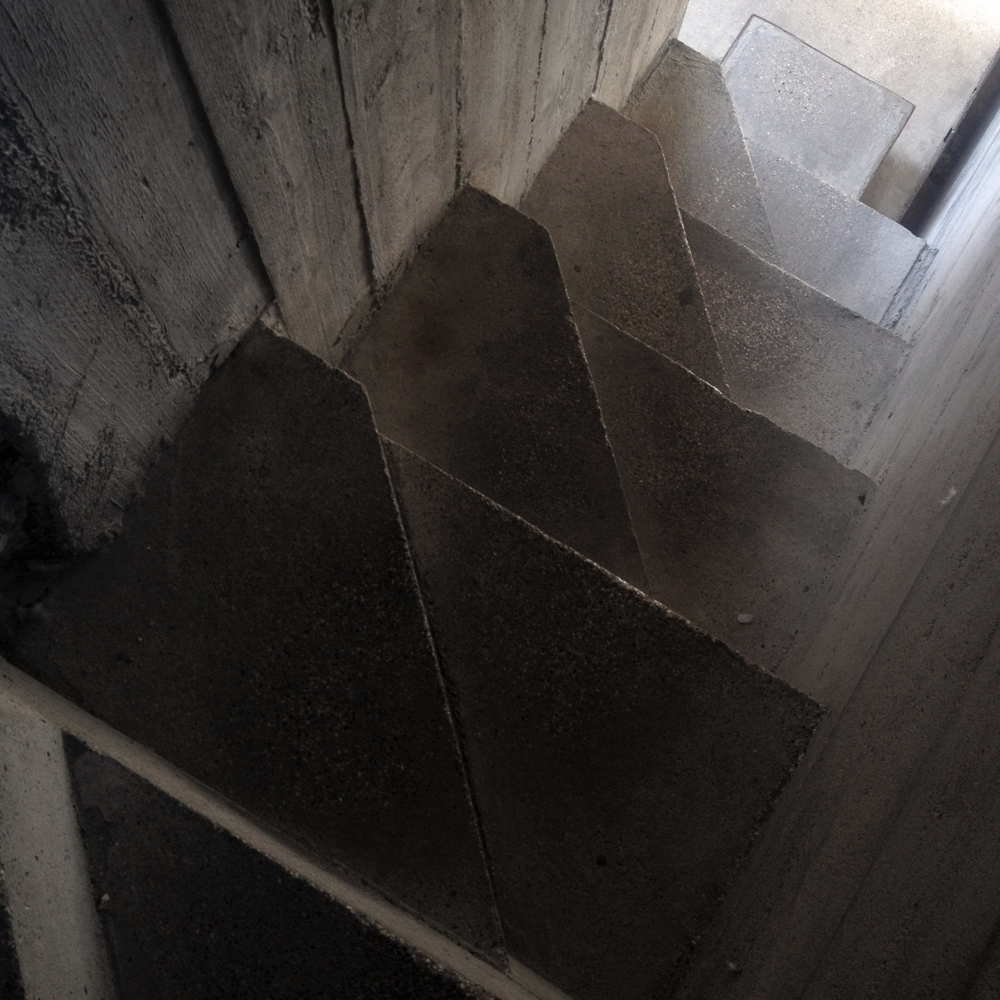

AI FOR ARCHITECTURE · SUMMER INTERNSHIP 2026
PROJECT 03 / P0
MULTIMODAL COMPUTER VISION + HUMAN-AI COLLABORATION
Castelvecchio
Evidence
Workbench
面向历史建筑视觉分析的可解释工作台：让 AI 提供视觉线索，让文献提供证据，让人保留最终判断。
图片输入
AI 观察
证据回溯
人工核验
开始案例学习
→
先查看实验总览 →

LIVE VISUAL SAMPLE · B03
HUMAN-IN-THE-LOOP